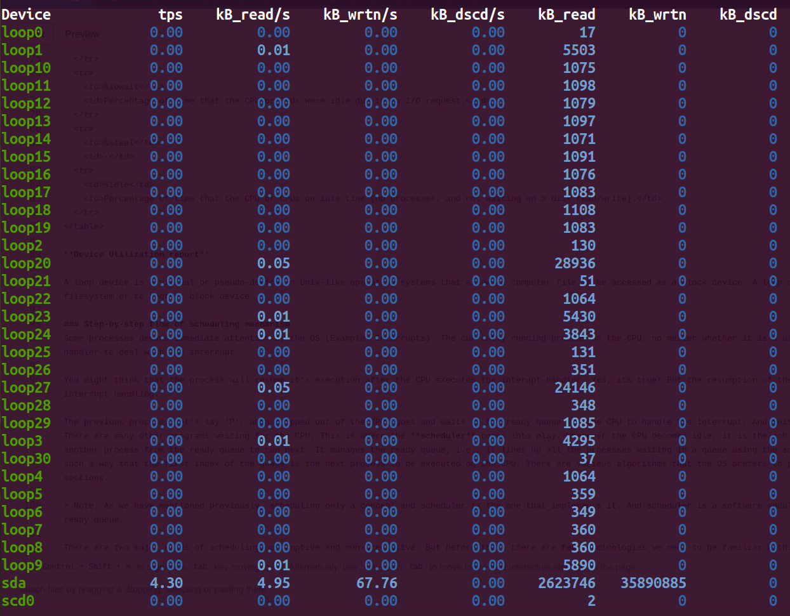

Preemptive vs non-preemptive scheduling
Scheduling in OS
Introduction
By now you must have already realized that an Operating system (OS) is not a monolithic system and rather a complex and meticulous synchronization of various subsystems (Process Management subsytem, Memory management subsytem, I/O management subsystem etc..) that provide services to the user and applications. In the previous Context Switching experiment we have already seen Process Management sussystem, Error handling subsystem and I/O management subsystem working together to make a successful context switch between two processes.
Similar to that of context switching, the mechanism of scheduling is also a part of 'Process Management Subsystem'. However, while context switching is responsible to store, restore and load the new context on the Central Processing Unit (CPU), scheduling is responsible for selecting or handing the over the next process ready to be executed on the CPU. We will discuss more about this in the following sections.
Scheduling and Scheduler
Before diving into the topic of scheduling, let us first clearly understand what scheduling and scheduler means.
Scheduling is the overall concept and process of determining the order in which processes or tasks are executed on the CPU. It encompasses the strategies and algorithms used to make decisions about when and for how long each process runs on the CPU. It ensures fairness, optimizing resource utilization, and achieving specific system performance goals.
Scheduler is the actual software entity responsible for executing the software policies defined by the OS. The scheduler code is implemented as a part of the kernel code.
Note: The objective of this experiment is to understand process of scheduling and we won't go into in-depth analysis of the scheduling algorithms used by the operating systems.
The scheduler performs the following tasks:
Selecting Processes: It decides which process from the pool of ready processes should be granted access to the CPU. The specific scheduling algorithm used determines the selection criteria.
Enforcing Priorities: If priority-based scheduling is in use, the scheduler ensures that higher-priority processes are given precedence over lower-priority ones.
Allocating CPU Time: The scheduler determines how much CPU time each process is allowed to use. In a preemptive scheduling system, it can interrupt the currently running process to allocate CPU time to a higher-priority process.
Managing the Ready Queue: It maintains a ready queue or a list of processes that are in a state to execute and selects processes from this queue for execution.
Note: Context switching is not a subpart of scheduling or a job done by the scheduler. It is an independent mechanism which aids the OS to implement the decision (which process to run next) made by the scheduler.
Why do we need scheduling?
We now have a basic understanding of what a scheduler is. But why is it important in process management?
Almost all programs have some alternating cycle of CPU usage and waiting for I/O of some kind. In a simple system running a single process, the time spent waiting for I/O is wasted, and those CPU cycles are lost forever. A scheduling system allows one process to use the CPU while another is waiting for I/O, thereby making full use of otherwise lost CPU cycles.
CPU-I/O Burst Cycle
Almost all processes alternate between two important time periods in a continuing cycle:
- A CPU burst (running state) of performing calculations, and
- An I/O burst (waiting state), waiting for data transfer in or out of the system.
There is also a ready state where the process is ready to use the CPU resources but let us just look at how the process execution flow looks like if no other process is allowed to compete for the CPU resources before the current process executes till it's completion. Below figure shows a simple alternating CPU and I/O burst cycle.

Process with more I/O bursts are called I/O bound, whereas processes with higher computation and need more CPU resources are termed as CPU bound.
In general, most of the applications we use are I/O bound. Which means that the CPU is idle for most of it's time. Instead of making CPU wait for the I/O request to be fulfilled, it would be more efficient if we use these clock cycles for other waiting processes. Scheduling does a pretty good job in utilising the CPU cycles efficiently. There are few other methods like caching, and parallelization to reduce the wastage of clock cycles and decrease the I/O wait time but scheduling mechanism is the one that helps the CPU cycles to be utilized more efficiently.
Resources
CPU bound and I/O bound - Wikipedia
CPU and I/O burst cycles - Baeldung
Types of scheduling
Non-preemptive scheduling: The simplest case of process execution is where the processes run till completion. Then the scheduler runs on the CPU and chooses the earliest arriving process. This is basically the first-come-first-serve (FCFS) idea. In this kind of process, there is no chance that any arrival of a new process can halt the current process's execution and replace it. Every new incoming process has to wait in the ready queue before the scheduler finally permits it to use the CPU. This kind of scheduling is called non-preemptive scheduling. No matter how many I/O bursts the process has, the scheduler will not give the CPU a new process till the current one terminates. Few other examples of non-preemptive scheduling are Shortest-job first(SJF) and Priority scheduling.
Preemptive scheduling: Preemptive cpu scheduling algorithms may take the cpu away from a running process BEFORE it has finished it's burst time. In this kind of scheduling every process is given a burst time by the scheduler. The burst time is the amount of time the scheduler thinks would be enough to execute the process till the end. Note that the burst time of a process would only be known to the scheduler after the process completes it's entire execution. Till then, it only calculates the burst time based on the prior information of the execution times of the previous processes.
Resources
Process scheduling - Who goes to run next
CPU scheduling - Finding the Burst time - Stack overflow
Transitional state view of scheduling
Let us look at how the system state changes as the execution of processes starts on the CPU.
Let us represent each state as
$$ X_{s} = \begin{cases} \text{ReadyOrRunningQ:} \overrightarrow{id} & \quad \text{A vectore representing all the processes in non terminated state.}\ \text{cpu: current pid} & \quad \text{current pid represents the current process running on the CPU.}\ \text{Ptime Map:} \overrightarrow{id} \rightarrow \overrightarrow{executedTime}:\overrightarrow{TotalExecutionTime} & \quad \text{Maps each process to the time they have spent on the CPU and the total time they need to complete their execution}\ \text{timer: T} & \quad \text{The amount of time after which the CPU is prompted to take a new process} \end{cases} $$
Due to space constraints, let us represent ReadyOrRunningQ with rQ and Ptime Map with map. A transition system can change it's state only when we have a function or action that triggers the state change. So let us define few basic functions that can change the state of a system.
timer_itr (): The hardware generates an interrupt whenever the Timer count reaches 0. This implies that the currect process running on the CPU has used up it's time quanta and need to move out so that other process can use the CPU.
syscall (): The currently running process encounters a trap (read, or exit) which would need it to release the CPU. A new process would likely come and use the CPU resources then.
sch(): This schedule() function selects the next process to run on the CPU.
Cosider the Timer to be set to 2 clock_ticks and the scheduler to select whatever is next in the queue to use the CPU. Now let us look at the below transition diagram and understand how scheduling mechanism changes the system state.

What's happening in the above diagram?
We initially had three processes with pids as 0, 1, and 2 respectively. Considering that it is also the order of their arrivals, we initially have three process in non-terminated state. The the process with pid 0 has arrived first, it will get to use the CPU first. It is shown in the diagram that the total time it needs to be use the CPU to finish it's execution is 3 clock_ticks while the Timer is set to 2 clock ticks. So after 2 clock ticks the hardware generates a timer interrupt and now it is the job of the scheduler to allocate the CPU to a new process. The next process to arrive was the process with pid 1. Hence the CPU starts executing pid 1. The Timer is set back to 2 after the new process is loaded.
Now pid 1 needs only 1 clock tick to complete it's execution. Hence it now encounters an exit syscall. The CPU will have to first deal with the trap handler to deal with this but let us just skip the kernel level code executions for now. Once this is done, the scheduler will select the next process to allocate the CPU. The timer is again set to 2 when the new process arrives. Note that the operation of timer varies from OS to OS. This is a very simple case of timer triggering scheduling. The now terminated process 1 is no longer placed in the rQ.
It is also important to remember that every time a scheduling occurs, the CPU has to deal with the interrupt/trap handlers and also execute the scheduler and context switch codes. This will incur some delay to the overall system. The below graph will help you better in understanding the CPU usage and timer states better.
Check how efficient your system is
Let us have a deeper look at CPU-I/O burst cycles. This will give you an insight into how your CPU resources are utilized. Use the below command and run it on your linux machine to get a deeper view of how processes utilize I/O systems and the CPU.
iostat
In case the above command is not found on your system, then first install it using sudo apt install sysstat and then run the above command again.
The iostat command displays two reports. CPU utilization report and Device utilization report.
CPU Utilization Report
For multiprocessor systems, the CPU values are global averages among all processors. Below is a CPU utilization report generated on a linux machine.

What does the above report indicate?
| %user | Percentage of CPU utilization while executing at user level. |
| %nice | Percentage of CPU utilization while executing at user level with nice priority. |
| %system | Percentage of CPU utilization while executing at kernel level. |
| %iowait | Percentage of time that the CPU or CPUs were idle due to an I/O request. |
| %steal | - |
| %idle | Percentage of time that the CPU or CPUs on idle time (no processes, and not waiting on a disk read/write). |
Device Utilization report

A loop device is a virtual or pseudo-device in Unix-like operating systems that allows a computer file to be accessed as a block device. A loop device maps its data blocks to the blocks of a regular file in a filesystem or to another block device.
| Device | This column gives the device (or partition) name as listed in the `/dev` directory. |
| tps | It indicate the number of transfers per second that were issued to the device. A transfer is an I/O request to the device. |
| kB_read/s | Indicate the amount of data read from the device expressed in a number of kilobytes per second. |
| kB_wrtn/s | Indicate the amount of data written to the device expressed in a number of kilobytes per second. |
| kB_dscd/s | Indicate the amount of data discarded for the device expressed in a number of kilobytes per second. |
| kB_read | The total number of kilobytes read. |
| kB_wrtn | The total number of kilobytes written. |
| kB_dscd | The total number of kilobytes discarded. |